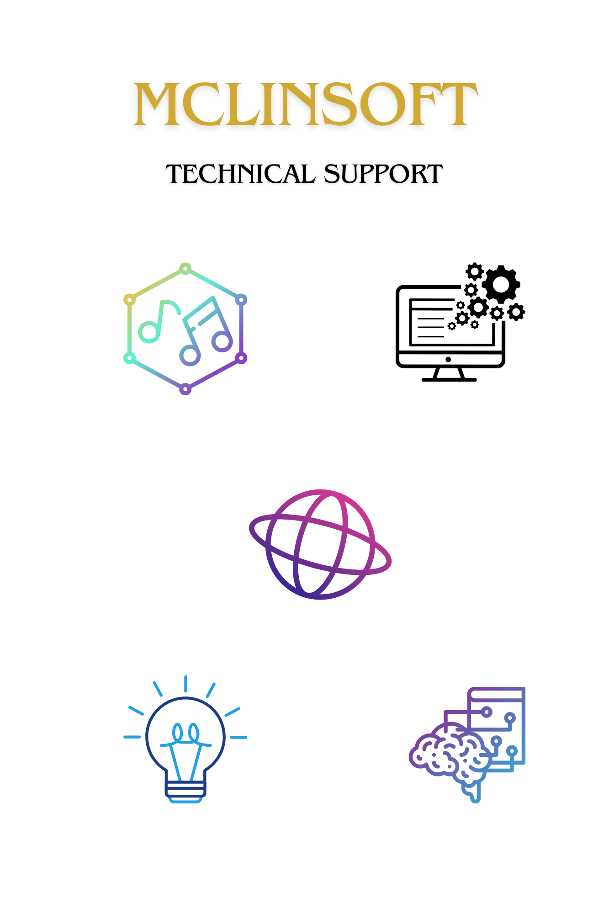
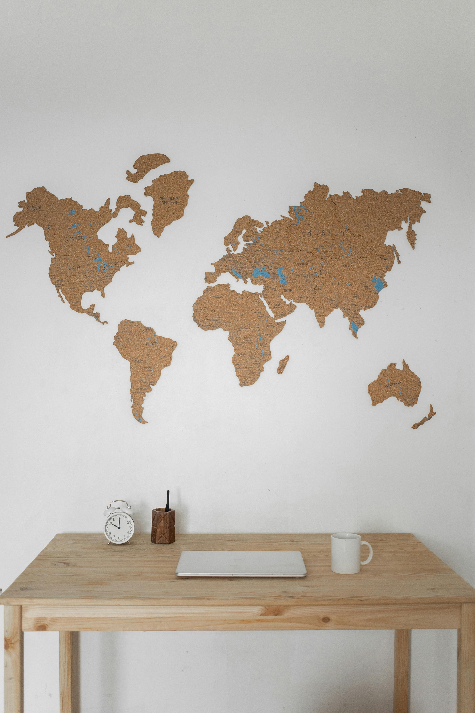
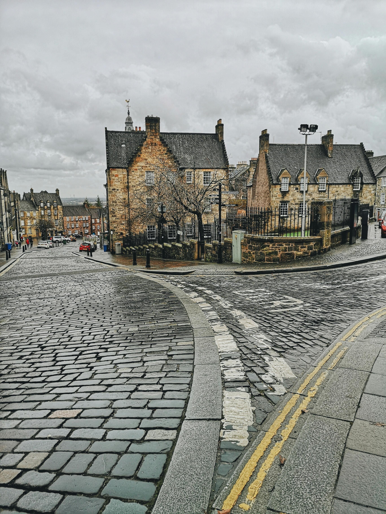

About McLinSoft
McLinSoft is a leading provider of technical support services based in Glasgow. Founded in 1983, our company has been dedicated to helping businesses optimize their technology infrastructure and streamline their operations.
Our team of experienced professionals is committed to delivering top-notch solutions tailored to meet the unique needs of each client. Whether you're a small startup or a large enterprise, McLinSoft is here to support you every step of the way.
Our Mission
At McLinSoft, our mission is to empower businesses with the tools and technology they need to succeed in today's digital world. We strive to provide reliable, innovative, and cost-effective solutions that drive growth and enhance productivity.
Our Values
- Customer Satisfaction
- Integrity
- Innovation
- Collaboration
- Continuous Improvement
Our Team
Meet the dedicated professionals behind McLinSoft:
- A.Lin and K.Soft - CEO
- Jane Doe - Chief Technology Officer
- Mark Johnson - Head of Technical Support
1983 – Company evolved in a basement in Stirling by B.Mc, A.Lin and K.Soft
McLinSoft was founded in 1983 by B.Mc, A.Lin, and K.Soft. It started as a small tech startup operating out of a basement in Stirling.
.jpg)
1985 – Initial name FunDa Chickens
In 1985, the company was initially named FunDa Chickens, reflecting its playful and creative approach to technology.
1992 – Named McLinSoft
In 1992, the company officially adopted the name McLinSoft, marking a significant milestone in its history.
1993 – Hiatus due to petty arguments
In 1993, McLinSoft faced internal conflicts and went on hiatus due to petty arguments among its founders and team members.
1996 – Reformed with masterplan to take on the world
In 1996, McLinSoft reformed with a new masterplan, determined to take on the world with innovative technology solutions.
2001 – Moved the headquarters to Glasgow
In 2001, McLinSoft relocated its headquarters to Glasgow, establishing a stronger presence in the tech hub of Scotland.

2007 – Moved to Ireland with Irish masterplan
In 2007, McLinSoft expanded its operations to Ireland, implementing an ambitious masterplan to capture the Irish market.
2008 – Irish masterplan failed, back to Stirling
In 2008, McLinSoft's Irish expansion plan failed, leading to a return to its roots in Stirling.
2011 – Glasgow office opened up
In 2011, McLinSoft opened its Glasgow office, further expanding its operations in Scotland.
2012 – Edinburgh office opened up
In 2012, McLinSoft expanded its presence in Scotland by opening an office in Edinburgh.
2016 – Aberdeen office opened up
In 2016, McLinSoft further expanded its operations in Scotland with the opening of an office in Aberdeen.
2017 – Planning for an office on the moon…
In 2017, McLinSoft announced ambitious plans for the future, including the possibility of establishing an office on the moon.